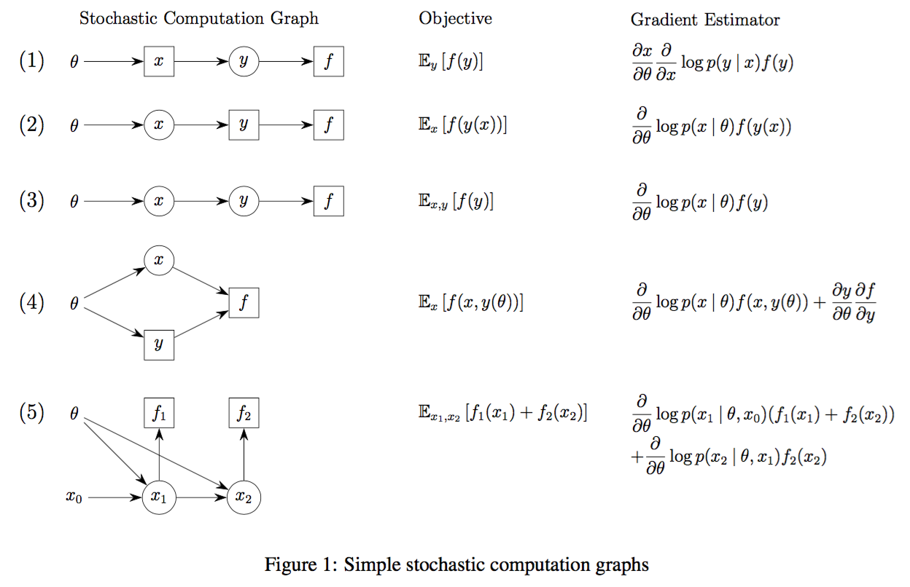

When I first learned about deep reinforcement learning, I was extremely confused how RL could fit in with deep learning – the two topics seem totally different, at least in the ways they’re presented! The trick is to understand that RL is simply optimizing a particular loss function, and we can thus view it in the context of optimization and make a direct comparison to supervised learning. In this post, we will show how the REINFORCE algorithm, used commonly in reinforcement learning, is actually a very general idea.
Classical Reinforcement Learning
First, a quick primer on reinforcement learning.
The classical setup of reinforcement learning is that we have an agent who lives in an environment with states $\mcS$ and can make actions $\mcA$ which causes them to transition to a new state. Depending on the state and action pair, they then receive some reward $r \in \reals$.
We can formalize these ideas with Markov decision processes (MDPs). An MDP has the following parameters:
-
time horizon $T$, which could be infinite
-
action space $\mcA$
-
state space $\mcS$
-
transition distribution $p(s' | s, a)$ for all $s,s' \in \mcS, a \in \mcA$ (this is the Markov ingredient)
-
reward function $r : \mcS \times \mcA \to \reals$ for a given state and action pair (possibly stochastic)
-
time discount factor $\gamma \in (0,1)$
Suppose we index time with $t = 0, 1, 2, \ldots, T$. The agent starts in state $s_0$. At time $t$, the agent is in state $s_t$ and decides to make action $a_t$, receiving reward $r_t = r(s_t, a_t)$. The agent wants to maximize their total expected discounted reward
$$\mathbb{E}{s_t, a_t, r_t} \left[ \sum{t=0}^T \gamma^t r_t \right]$$
where the expectation is over all sampled trajectories $s_0, a_0, s_1, a_1, \ldots, s_T, a_T$. To be clear $s_{t+1} \sim p(s_{t+1}|s_t, a_t)$ throughout the trajectory, and $r_t \sim r(s_t, a_t)$.
We have here an objective we want to optimize! We’ll revisit this in the deep learning context, but first we take a look at how we solve it traditionally.
Solving the MDP
To solve the MDP, the agent has a policy function $\pi : \mcS \to \mcA$ that selects the action to make in a given state (possibly stochastic).
In general, we assume that the agent doesn’t know the reward function $r(s,a)$ or the transition distribution $p(s' | s,a)$ – if they did, solving the MDP would be possible through dynamic programming methods. The agent can try to estimate the reward function and transition distribution – this is known as model-based reinforcement learning, aptly named since we try to guess the MDP model of the environment.
We instead cover model-free RL where we estimate $\pi$ directly. Therefore, the overall strategy to learn the function $\pi : \mcS \to \mcA$ will be: by testing out values of $a$ to see what rewards we get (exploration step), and once we’ve collected enough evidence, pick the best action $a$ for each step (exploitation).
Estimating the Policy and Q-learning
Note that we have a lot of freedom in our learning strategy.
-
How do we keep track of our exploration (do we need to save all of our sample trajectories)?
-
How are we going to do exploration (do we make actions completely randomly)?
Some preliminary answers:
-
Short answer: no. Instead of saving our entire sample trajectory, it suffices to have training data in the form $(s, a, r, s')$ – this is because our transition distribution is Markovian, and the reward $r$ and next state $s'$ only depends on $s, a$ (not whatever came before).
-
There are several exploration strategies, the most common of which is $\epsilon$-greedy, where we pick an action uniformly at random with probability $\epsilon$ and pick our current best estimate action with probability $1-\epsilon$.
Another is to make actions in proportion to states we already think are “good” - i.e. if we got a lot of reward from a certain action $a_0$, we are more likely to do $a_0$ (but still do other actions with some probability!).
To effectively learn a policy, we can use the trajectory data to estimate either a value function $V(s)$ or a Q-function $Q(s,a)$ to summarize our data. $V(s)$ estimates the best total reward we can get if we start from state $s$ and act optimally; $Q(s,a)$ tracks the same if we start with action $a$ in state $s$.
Note the direct relation $V(s) = \arg\max_a Q(s,a)$. Also, in optimality we have
$$V^(s) = \max_{a \in \mcA} r(s,a) + \gamma \mathbb{E}_{s' \sim p(s'|s,a)} [V^(s')]$$
$$Q^*(s,a) = r(s,a) + \gamma \mathbb{E}{s' \sim p(s'|s,a)} \left[ \max{a' \in \mcA} Q(s', a') \right]$$
by recursively defining $V^*$ and $Q^*$ as optimal. These relations are known as the Bellman equations, and they are necessary and sufficient for optimality.
If we can learn either of these, note the optimal policy will be $\pi(s) = \arg\max_{a \in\mcA} Q(s,a)$ or also $\pi(s) = \arg\max_{a \in \mcA} r + \gamma \mathbb{E}_{s' \sim p(s' | s, a)}[ V(s') ]$.
Q-learning
One of the standard techniques for reinforcement learning is Q-learning. We initialize our table of $Q(s,a)$ values to 0, so that our parameters are $\theta_{s,a} = Q(s,a)$. If we’re in state $s$, make action $a$, and get reward $r$, we make the update
$$Q(s,a) \gets Q(s,a) + \alpha \left(r + \gamma \max_{a' \in \mcA} Q(s', a') - Q(s,a) \right)$$
where $\alpha$ is a learning rate.
The astute reader will realize that this update rule is actually gradient descent on some kind of least squares objective! Specifically, the loss is
$$\mcL = \mathbb{E}{s,a}\left[ \left( Q(s,a) - (r(s,a) + \gamma \mathbb{E}{s' \sim p(s'|s,a)}[ \max_{a'} Q(s', a') ]) \right)^2 \right]$$
At optimality, we have that
$$Q(s,a) \equiv r + \gamma \mathbb{E}{s' \sim p(s'|s,a)} \max{a'} Q(s', a')$$
which is exactly the Bellman condition! In Q-learning, we try to satisfy the Bellman condition through optimizing $\mcL$ by sampling $s' \sim p(s' | s,a)$ and performing gradient ascent on the parameters $\theta_{s,a} = Q(s,a)$. Our gradients are, to be clear,
$$\frac{\partial \mcL}{\partial \theta_{s,a}} := r + \gamma \max_{a' \in \mcA} Q(s', a') - Q(s,a)$$
which come from differentiating $\mcL$ and sampling. Thus our Q-learning update is very well motivated.
Tie-in to Deep Learning
In our Q-learning loss, there is nothing that says we have to parametrize it as a table of values $\theta_{s,a} = Q(s,a)$. We can instead use a neural network $Q(s,a; \theta)$ where $\theta$ are parameters of some arbitrary net (could have convolutions, MLPs, etc.). Then, using training tuples $(s, a, r, s')$, we can do backpropagation in the usual way to get gradients $\partial \mcL / \partial \theta$. Specifically, the gradients come out to be
$$\frac{\partial \mcL}{\partial \theta} := (r + \gamma \max_{a' \in \mcA} Q(s', a') - Q(s,a)) \frac{\partial Q(s, a; \theta)}{\partial \theta}$$
That’s all there is to deep Q-learning! You have flexibility to choose how to encode your $s,a$ pair, as well as come up with all kinds of learning schedules, but the core idea is there. You can read about how (Mnih et al. 2015) use this technique to play Atari games from pixels.
Policy Gradient
Instead of learning a proxy Q-function, we can try to solve the MDP directly. Let’s revisit the objective we want to optimize:
$$\mcL = \mathbb{E}{s_t, a_t} \left[ \sum{t=0}^T \gamma^t r_t(s_t, a_t) \right]$$
Now, we assume our policy is a parameterized stochastic map $\pi(\cdot; \theta) : \mcS \to \mcA$, so that we draw actions according to $a_t \sim \pi(a_t | s_t; \theta)$. Immediately, we run into a problem with backpropagation – how do we backpropagate through the expectation?
The answer is in the classic paper Williams (1992), also known as REINFORCE, the score function estimator, or the likelihood ratio estimator.1 Let the quantity in the expectation be $f(s_t, a_t)$, so that if we write out the expectation over the $a_t$ in full:
$$\mcL = \sum_t \gamma^t \mathbb{E}{s{t+1} \sim p(s_{t+1} | s_t, a_t)} \sum_{a_t} \pi(a_t | s_t; \theta) r(s_t, a_t)$$
Now we take the gradient with respect to $\theta$:
$$\begin{aligned} \frac{\partial\mcL}{\partial \theta} &= \sum_t \gamma^t \mathbb{E}{s{t+1} \sim p(s_{t+1} | s_t, a_t)} \sum_{a_t} \frac{\partial}{\partial \theta} ( \pi(a_t | s_t; \theta) r(s_t, a_t)) \ &= \sum_t \gamma^t \mathbb{E}{s{t+1} \sim p(s_{t+1} | s_t, a_t)} \sum_{a_t} \frac{\partial \pi(a_t | s_t; \theta)}{\partial \theta} r(s_t, a_t) \ &= \sum_t \gamma^t \mathbb{E}{s{t+1} \sim p(s_{t+1} | s_t, a_t)} \sum_{a_t} \frac{\partial \pi(a_t | s_t; \theta)}{\partial \theta} \frac{\pi(a_t | s_t; \theta)}{\pi(a_t | s_t; \theta)} r(s_t, a_t) \ &= \sum_t \gamma^t \mathbb{E}{s{t+1} \sim p(s_{t+1} | s_t, a_t)} \sum_{a_t} \pi(a_t | s_t; \theta) \frac{\partial \log \pi(a_t | s_t; \theta)}{\partial \theta} r(s_t, a_t) \ &= \sum_t \gamma^t \mathbb{E}{s{t+1} \sim p(s_{t+1} | s_t, a_t),\, a_t \sim \pi(a_t | s_t; \theta)} \frac{\partial \log \pi(a_t | s_t; \theta)}{\partial \theta} r(s_t, a_t) \ &=\mathbb{E}{s{t+1} \sim p(s_{t+1} | s_t, a_t),\, a_t \sim \pi(a_t | s_t; \theta)}\left[ \sum_t \gamma^t \frac{\partial \log \pi(a_t | s_t; \theta)}{\partial \theta} r(s_t, a_t) \right]\end{aligned}$$
Notice our trick: we used the fact that $\frac{\partial \log y}{ \partial x } = \frac{\partial y}{\partial x} \frac{1}{y}$. This allows us to efficiently sample our actions $a_t$ to calculate the expectation instead of needing to compute a (potentially big) sum over $a_t$.
Some intution: there is no longer any direct gradient flow backwards to our parameters. Instead, we need to obtain samples and compute $\partial \log \pi(a_t | s_t; \theta) / \partial \theta$ and $r(s_t, a_t)$ – here the signal will come from the reward in $r(s_t, a_t)$. Good actions $a$ will lead to high reward, leading to a bigger gradient and increasing the probability $\pi(a)$. Conversely, bad actions with negative reward will lead to a negative gradient, decreasing the probability of $\pi(a)$.
The gradients we compute here are known as policy gradients – a fitting name since we differentiate the log probability of the policy.
Aside on control variates
The gradient we just computed is unbiased – sampling has the right expectation. In practice, people will sample one trajectory to get a gradient, but this will cause the variance to be very high. There is a trick to get around this, known as the likelihood ratio trick.
Simply, if we want to get samples for $\mathbb{E}_{a_t \sim \pi(a_t | s_t; \theta)} \left[ \frac{\partial \log \pi(a_t | s_t; \theta)}{\partial \theta} r(s_t, a_t) \right]$, this turns out to be equal to
$$\mathbb{E}_{a_t \sim \pi(a_t | s_t; \theta)} \left[ \frac{\partial \log \pi(a_t | s_t; \theta)}{\partial \theta} (r(s_t, a_t) - b) \right]$$
for any $b$ constant with respect to $a_t$. This is because
$$\begin{aligned} \mathbb{E}{a_t} \left[ \frac{\partial\log \pi(a_t | s_t; \theta)}{\partial \theta} b \right] &= b \sum{a_t} \frac{\partial\log \pi(a_t | s_t; \theta)}{\partial \theta} \pi(a_t | s_t; \theta) \ &= b\sum_{a_t} \frac{\partial \pi(a_t | s_t; \theta)}{\partial \theta} \frac{\pi(a_t | s_t; \theta)}{\pi(a_t | s_t; \theta)} \ &= b\sum_{a_t} \frac{\partial \pi(a_t | s_t; \theta)}{\partial \theta} \ &= b\frac{\partial}{\partial\theta} \sum_{a_t} \pi(a_t | s_t; \theta) = b\frac{\partial}{\partial\theta} 1 = 0\\end{aligned}$$
So we can freely pick $b$ such that the estimate has the lowest variance - finding the optimal $b$ is outside the scope of this post. However, we can interpret what $b$ is: instead of our reward $r(s_t, a_t)$ we have $r(s_t, a_t) - b$, so we can think of $b$ as a baseline reward. In fact, if we write $b := V(s_t)$ then we can interpret $r(s_t, a_t) - V(s_t)$ as an “advantage function”, i.e. the advantage of choosing $a_t$ in state $s_t$.
Stochastic Computation Graphs
In the RL setup we made our action stochastic and using REINFORCE were able to backpropagate gradients to the action distribution $\pi(a_t | s_t; \theta)$. In fact, this technique is very general: in a neural network setting, it means that if we have stochastic nodes that are sampled from parameterized distributions, we can compute gradients without the differentiability condition!
The paper, (Schulman et al. 2015), neatly explains how all of this fits together using stochastic computation graphs.
Basically, a stochastic computation graph is any graph that has nodes with random variables in addition to deterministic nodes, and the loss function is defined as the sum of some endpoint nodes. There will then be three kinds of parameters:
-
parameters that come after stochastic nodes, with direct deterministic paths to the loss
-
parameters that precede stochastic nodes, which can’t be directly differentiated for the loss,
-
parameters that have both direct paths to the loss, as well as paths that go through stochastic nodes
For the first kind, parameters that have direct paths to the loss, we can compute the gradients with backpropagation as usual.
We turn to REINFORCE for the second kind to get gradients that precede the stochastic nodes. Recall that in reinforcement learning, our policy gradient had two main components, the reward $r(s_t, a_t)$ and the log-probability gradient $\frac{\partial \log \pi(a_t | s_t; \theta) }{ \partial \theta}$. In a general stochastic computation graph, the reward is replaced by the sum of all losses influenced downstream of our stochastic sample – this makes sense since only those should provide training signal for our probability distribution.
For the third kind, we can sum up the gradients from each path due to linearity of gradients.
To make this concrete, here are some examples (from the original paper):

where circles are stochastic nodes, squares are deterministic nodes. Notice how the stochastic nodes all result in gradients of the form $\frac{\partial}{\partial \theta} \log p( - | \theta)$ times the sum of downstream losses.
It turns out that stochastic computation graphs are everywhere! This idea has a lot of instantiations – hard attention models (Mnih et al. 2014; Xu et al. 2015), black box variational inference (BBVI) (Ranganath, Gerrish, and Blei 2014), and of course policy gradients all use REINFORCE to backpropagate through stochastic components of their model. We can therefore differentiate stochastic functions as complicated as we like, as long as we have a loss function to optimize, and REINFORCE + backpropagation takes care of the rest.
Conclusion
Armed with our new understanding of RL, we can ask the following question: why is it harder than supervised learning? The key difference is in the stochasticity: because our signal comes from a sampled scalar reward, it’s hard to tell which action led directly to a better outcome. In networks where there is further computation after the stochastic decision (such as hard attention models), this problem is exacerbated. Contrast this with supervised learning, where the signal is backpropagated directly through the entire differentiable network. Therefore, although the REINFORCE method is very general, in certain cases it may not be suitable for the problem.
The reason I wrote this blog post is that the ideas of REINFORCE and stochastic computation graphs are very general, yet it’s hard to see the connections between the instantiations if you don’t already know about it. While there are a ton of other topics outside the scope of this post, I hope this blog post helps you start making the key connections!
References
- Mnih, Volodymyr, Nicolas Heess, Alex Graves, and Koray Kavukcuoglu. 2014. “Recurrent models of visual attention.” Advances in Neural Information Processing Systems, 2204—2212.
- Mnih, Volodymyr, Koray Kavukcuoglu, David Silver, Andrei a Rusu, Joel Veness, Marc G Bellemare, Alex Graves, et al. 2015. “Human-level control through deep reinforcement learning.” Nature 518 (7540): 529–33.
- Ranganath, Rajesh, Sean Gerrish, and David M Blei. 2014. “Black Box Variational Inference.” AISTATS 33.
- Schulman, John, Nicolas Heess, Theophane Weber, and Pieter Abbeel. 2015. “Gradient Estimation Using Stochastic Computation Graphs.” NIPS, 1–13.
- Williams, Ronald J. 1992. “Simple statistical gradient-following algorithms for connectionist reinforcement learning.” Machine Learning 8 (3-4). Springer: 229–56.
- Xu, Kelvin, Jimmy Ba, Ryan Kiros, Kyunghyun Cho, Aaron C Courville, Ruslan Salakhutdinov, Richard S Zemel, and Yoshua Bengio. 2015. “Show, Attend and Tell: Neural Image Caption Generation with Visual Attention.” ICML 14: 77—81.
-
If you try to read the original paper, it probably won’t make a lot of sense to you, since the language it uses is outdated and radically different from the current way we talk about things. ↩